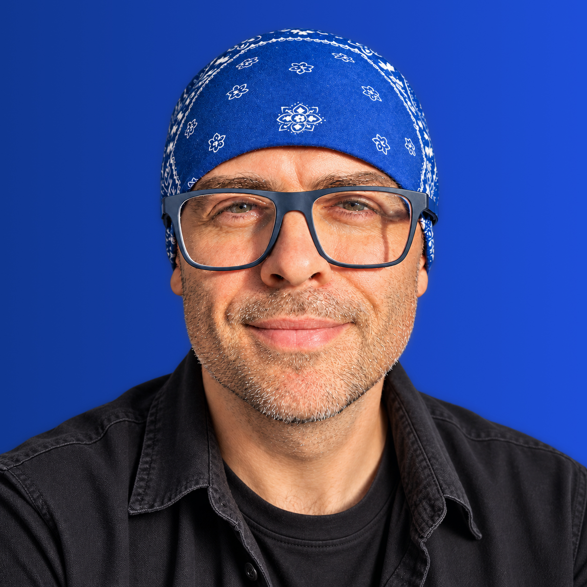

Serhii Orlenko
UI/UX Designer
Product Design · Web & Mobile
I design clear, practical interfaces for web and mobile.
Приклад формулювань і композиції. Кнопки ведуть до пояснень нижче; це ще не повний сайт.

Ідея напряму
Синій у фото задає акцент. Світле нейтральне тло, темний текст і спокійна типографіка залишають увагу на людині та роботах. Насичений синій позначає головну дію й посилання.
01 / Колір
Синій акцент. Чітка основа.
Кожен колір має роль. Світла межа — для поділу поверхонь; контур інтерактивних елементів і фокус мають виразніший контраст.
#F7F8FA#FFFFFF#172033#566176#1D4ED8#173EA8#E8EEFC#D8DDE7Основний текст / тло
15.31 : 1Другорядний текст / тло
5.87 : 1Білий текст / синя кнопка
6.70 : 1Розраховано для вказаних HEX-пар на непрозорих поверхнях. Усі три пари перевищують 4.5:1 для звичайного тексту. Це перевірка палітри; доступність готового сайту потребує окремої перевірки сторінок і взаємодій.
02 / Взаємодія
Помітна дія та фокус.
Наведіть курсор на кнопки у першому екрані або пройдіть ними клавішею Tab. Нижче — постійні зразки трьох станів.
Звичайний стан
Білий текст на #1D4ED8
Контраст 6.70:1
Наведення курсора
Білий текст на #173EA8
Контраст 9.17:1
Фокус клавіатури
Синій контур 3 px із відступом
Окремий від заливки кнопки
03 / Типографіка
Шрифти згідно з CV, ясна ієрархія.
Plus Jakarta Sans для акцентних заголовків. Source Sans 3 для основного тексту та інтерфейсних підписів.
Plus Jakarta Sans · 600 / 700
Clear ideas.
Practical interfaces.
Виразний заголовок, геометричний гротеск, звичайний регістр без суцільних великих літер.
Source Sans 3 · 400 / 600
Короткий опис пояснює завдання, особисту роль і рішення. Результат називаємо лише тоді, коли його можна підтвердити.
Основний текст 16–18 px · міжрядковий інтервал 1.6 · комфортна довжина рядка.
Місце для вибраних робіт
У готовому портфоліо тут будуть 2–3 проєкти з підтвердженою роллю, рішеннями та результатом. Цей зразок показує палітру й перший екран; кейси ще не додані.
Контакт і CV
До готової версії додамо актуальний CV та перевірені контактні посилання. У цьому зразку немає демонстраційної форми чи фіктивного завантаження CV.